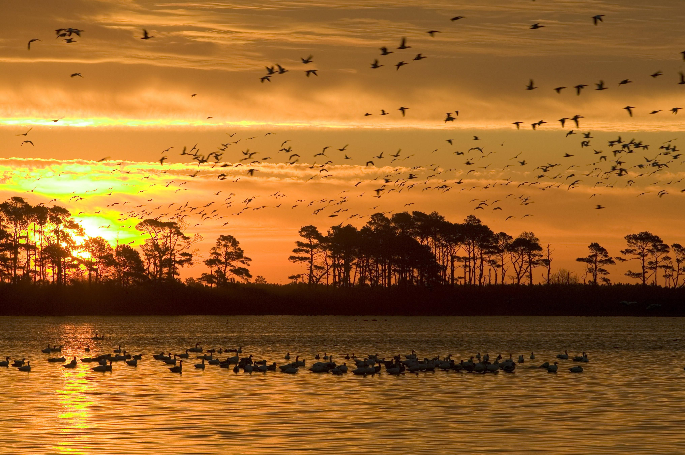
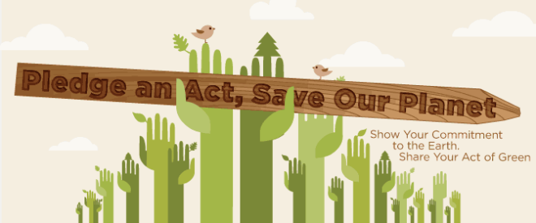

-
"Climate change is happening, humans are causing it, and I think this is perhaps the most serious environmental issue facing us."
-Bill Nye
-
Green planet was founded in 2015.
Please join us and others like yourself and spread the word: "Keep our planet green". Time is running out we must change or we will die. Manufacturers please put the message on your products if you'd like, and everyone please use it anywhere you see fit. Thank you for spreading the word.
-
Earth is a unique and remarkable planet.
It the home to humanity, and the only known planet to nurture life. Earth is a parent to us, it provides us with everything we can possibly ask for: food, water, resources, air, and everything to sustain life. This jewel of the galaxy is at risk. We humans are hurting ourselves, and more importantly, we are hurting the Earth.


-
Earth is home to millions of species of life.
Climate change is wiping out many species, at a frightening rate. Precious animals and life are dying at a rate that rivals mass extinctions. We are entering a period of human-caused mass extinctions. It's scary that the next generation of life may not live to see another day.
- Carbon dioxide levels has skyrocketed to 402.23 parts per million. CO2 levels are at its peak since the last 650,000 years.
- Global temperatures are up 1.4 degrees F since 1880. Nine out of ten years since 2000 broke the records for the warmest year.
- Over the past 100 years, sea levels have risen over 7 inches. That is a 3.38mm increase per year. Costal cities are at risk of getting flooded by the rising sealevel.

-
190 countries have met in Paris and have agreed to curb climate change.
Now, it is our responsiblility to contribute. - To optimize our carbon emissions, we must conserve our electricity usage. Shutting off electrical gadgets when they are not used is a great start. It technically does not save power but it saves resources to generate power.
- To conserve water usage and pollution, we must moderate our water usage. Do not leave faucets running when they are not used. Try to avoid using plastic disposable water bottles, they are terrible for the environment.
Most importantly, we must spread the word and encourage others to reduce our carbon footprint.